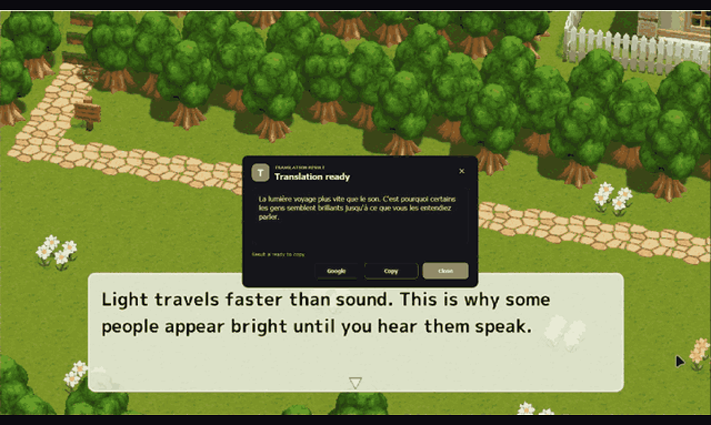
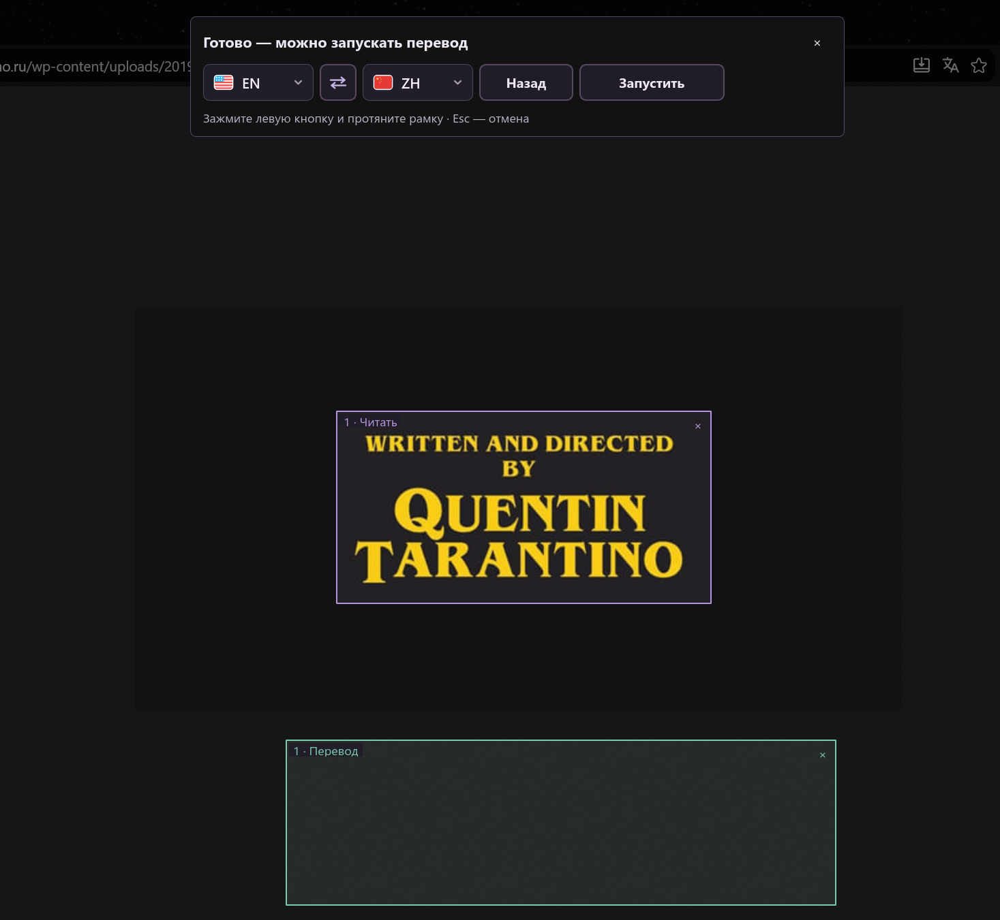
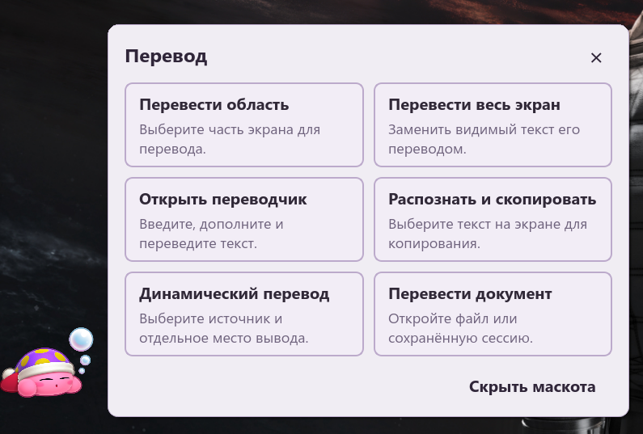

Lokale Erkennung
Windows OCR, Apple Vision, Tesseract und weitere Engines lesen Text auf deinem Rechner.
KLEINE APP. EINE WELT OHNE SPRACHBARRIEREN.
Ein Spiel, ein Video oder ein schwieriges PDF. Markiere den Text auf dem Bildschirm. Die Übersetzung erscheint genau dort, wo du sie brauchst.
Ohne Konto. Ohne Werbung. Open Source.


Sieh dir eine kurze Aufnahme der App an.
SEHEN. AUSWÄHLEN. VERSTEHEN.
Keine Screenshots zwischen Apps verschieben. Aktion wählen und weitermachen.
Übersetze eine Bildschirmregion, auch wenn sich der Text nicht auswählen lässt.
Ctrl + Alt + TSieh dir eine kurze Aufnahme der App an.
Text aus Bildern, Scans oder Apps direkt in die Zwischenablage übernehmen.
Ctrl + Alt + CSieh dir eine kurze Aufnahme der App an.
Übersetzung über dem sichtbaren Text anzeigen. Rechtsklick schließt die Einblendung.
Ctrl + Alt + FSieh dir eine kurze Aufnahme der App an.
Markierten Text in einer App übersetzen oder durch die Übersetzung ersetzen.
Ctrl + Alt + QSieh dir eine kurze Aufnahme der App an.
TEXT ÄNDERT SICH. DIE ÜBERSETZUNG FOLGT.
Markiere die gewünschten Regionen. Die dynamische Übersetzung folgt Textänderungen und erscheint über dem Original oder in einem eigenen Bereich.
Ctrl + Alt + GLila: Original. Grün: Übersetzungsbereich.


DEIN DESKTOP-BEGLEITER
Keine Lust auf Tastenkürzel? Klicke auf den Begleiter, um zu übersetzen, Text zu kopieren oder ein Dokument zu öffnen.
Helles oder dunkles Design. Jederzeit ausblendbar.
DEIN TEXT. DEINE WAHL.
Windows OCR, Apple Vision, Tesseract und weitere Engines lesen Text auf deinem Rechner.
Nutze einen Onlinedienst oder lade Argos Translate / Hy-MT-Modelle herunter.
Onlinedienste erhalten den zu übersetzenden Text. Mit einer Offline-Engine bleiben Erkennung und Übersetzung auf deinem Gerät.
BEREIT, WENN DU ES BIST
Wähle dein System. Die App ist kostenlos, Python ist enthalten.
Aktuelle Version v1.8.1Windows 10 / 11 · x64
macOS 13.4 oder neuer
InstallationsanleitungLinux · x86_64
Die AppImage-Datei vor dem Öffnen ausführbar machen.
Windows und Mac verwenden ein selbstsigniertes Zertifikat namens jabrailkhalil. Beim ersten Start kann eine Warnung erscheinen; die Mac-App ist nicht von Apple notarisiert.
Alle Dateien & PrüfsummenFAQ
Ja, nachdem OCR-Sprachen und ein Argos Translate- oder Hy-MT-Modell heruntergeladen wurden. Onlinedienste brauchen Internet.
Unter Windows mit der Update-Schaltfläche in der App. Unter Mac und Linux das neue DMG oder AppImage herunterladen und die App ersetzen; Benutzerdaten behalten.
Sichtbarer Text in Spielen und Videos kann gelesen werden. Schrift, Bildqualität und Aufnahmerechte beeinflussen das Ergebnis. Fenstermodus kann nötig sein.
Ja, in den Einstellungen. Auf Mac Command und Option statt Ctrl und Alt verwenden; unter Linux die Desktop-Tastenkürzel konfigurieren.
TXT, Markdown, DOCX, PDF, HTML und RTF werden unterstützt. Auf Mac hilft die App bei Bildschirmaufnahme- und Bedienungshilfen-Berechtigungen.
Schon über 3.000 Downloads. Wenn die App dir hilft, freuen wir uns über einen GitHub-Stern oder deinen Besuch bei Telegram.